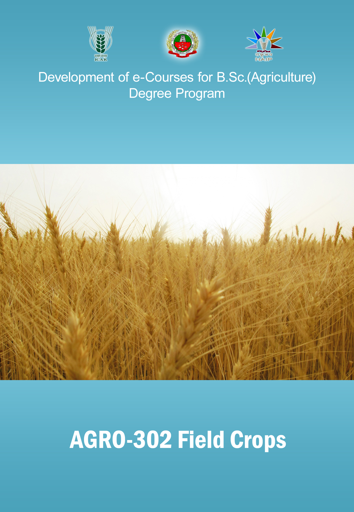

AGRONOMY OF FIELD CROPS ::
(2+2)

Select the lecture topic...
Lecture 01
:IMPORTANCE AND AREA...
Lecture 02
:RICE - ORIGIN ...
Lecture 03
:MAIZE - ORIGIN, ...
Lecture 04
: WHEAT AND ...
Lecture 05
: OATS, RYE & TRITICALE ...
Lecture 06
: SORGHUM & PEARL ...
Lecture 07
: Pearlmillet
Lecture 08
: Finger Millets
Lecture 09
: Small Millets
Lecture 10
: Redgram
Lecture 11
: Blackgram
Lecture 12
: Greengram
Lecture 13
: Rice fallow pulse
Lecture 14
: Cowpea
Lecture 15
: RABI PULSES
Lecture 16
: Other Pulses with...
Lecture 17
: Horse gram
Lecture 18
: Green manures
Lecture 19
: Importance of Forages
Lecture 20
: Forage - Grasses
Lecture 21
: Forage - Grasses
Lecture 22
: Temperate Forages
Lecture 23
: Fodder - Trees
Syllabus